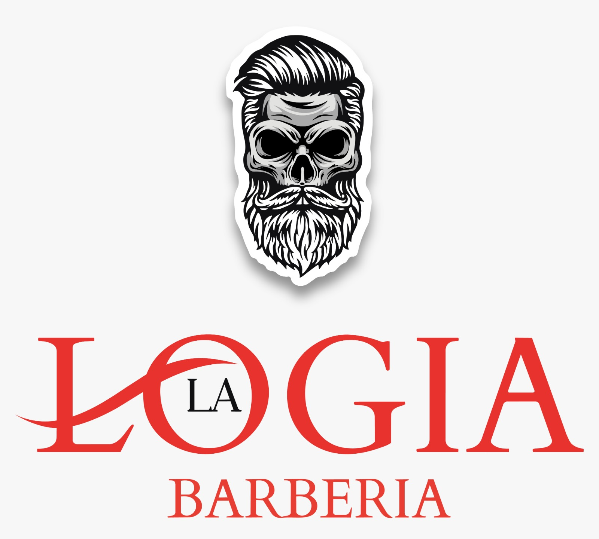

San Joaquín de Flores · Heredia · Desde 2020

Una barbería,
no una barber shop
Silla, navaja y conversación. Un espacio clásico y de ambiente familiar donde media hora alcanza para salir siendo otro.
Reserva en línea, sin llamadas · Confirmación inmediata
- 4,9de 5 estrellas
- 1.067reseñas de clientes
- 2020año de fundación
La casa
Quisimos salirnos del molde.
Por eso esto es una logia.
Acondicionamos un espacio elegante y distinto para que su visita sea placentera: sillas de barbero, buena música, café si hace falta y el tiempo suficiente para hacer bien el trabajo. Aquí nadie lo apura.
Trabajamos el oficio clásico —tijera, máquina, navaja y toalla caliente— con la confianza de una barbería de barrio. Vienen papás con hijos, vienen abuelos, vienen los del gimnasio de la esquina. Todos salen igual de bien.
La carta
Servicios
-
Corte de cabello
Clásico o moderno, definido con tijera y máquina. Lavado, secado y peinado incluidos.
-
Corte y barba
El servicio completo: corte, perfilado de barba con navaja y toalla caliente.
-
Arreglo de barba
Diseño de contornos, recorte a medida y aceite para dejarla suave y en forma.
-
Afeitado con navaja
El ritual de siempre: espuma caliente, navaja al ras y bálsamo para cerrar.
-
Corte para niños
Paciencia, silla firme y buen resultado. Su primera visita a la barbería importa.
-
Corte adulto mayor
Con tiempo, cuidado y tarifa preferencial. El oficio de siempre para quien lo enseñó.
Precios, duración y disponibilidad de cada barbero se muestran al momento de agendar. Ver precios y agendar
Cómo agendar
Tres pasos y la silla es suya
-
I
Elija servicio y barbero
Abra la agenda en línea y escoja lo que necesita y con quién quiere atenderse.
-
II
Reserve su hora
Vea los espacios libres en tiempo real y confirme. Le llega el recordatorio al celular.
-
III
Llegue y siéntese
Sin filas ni esperas. A la hora acordada la silla ya está lista para usted.
La galería
Nuestro espacio
Lo que dicen
Reseñas de clientes
Carlos Rodríguez
Hace 2 meses
Excelente barbería. El trabajo es de primera calidad, el ambiente es muy agradable y los barberos conocen su oficio. Definitivamente vuelvo.
Google BusinessManuel Cortés
Hace 1 mes
Una verdadera barbería de barrio, con clase y profesionalismo. La atención es cálida, personalizada. Recomendado ampliamente a cualquiera que busque un corte de calidad.
Google BusinessDiego Álvarez
Hace 3 semanas
Increíble experiencia. No es solo un corte, es un ritual. El ambiente, la música, la atención... todo está pensado al detalle. Volveré sin dudarlo.
Google BusinessDónde estamos
San Joaquín de Flores,
frente al condominio Torre Sol
- Dirección
- San Joaquín de Flores, Heredia, Costa Rica.
Frente al condominio Torre Sol. - Cómo llegar
- Busque «La Logia Barbería» en Waze o Google Maps y llega directo.
- Teléfono y WhatsApp
- +506 7270 5262
- Horario
- Los espacios libres de hoy y de toda la semana se ven en la agenda en línea.